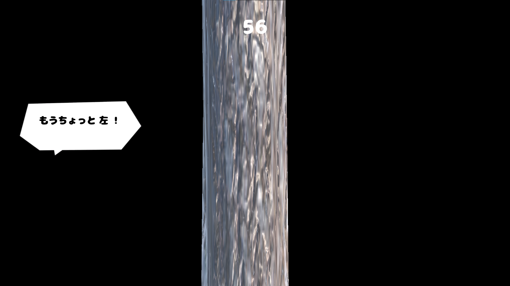
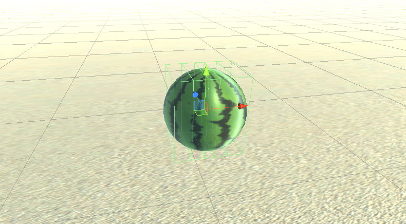
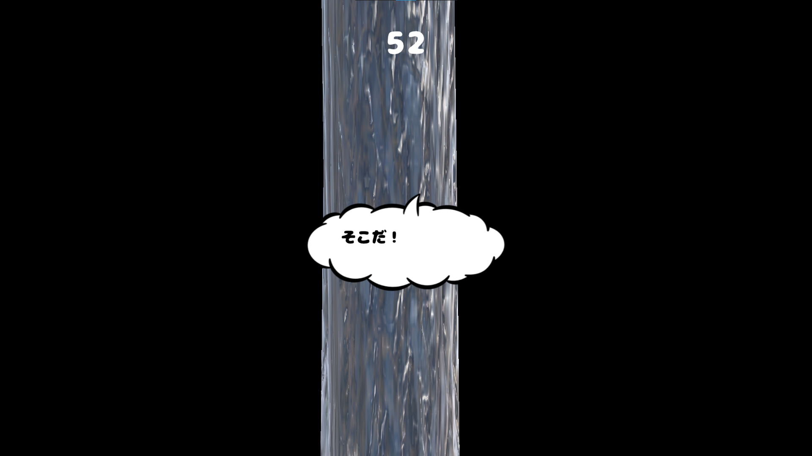
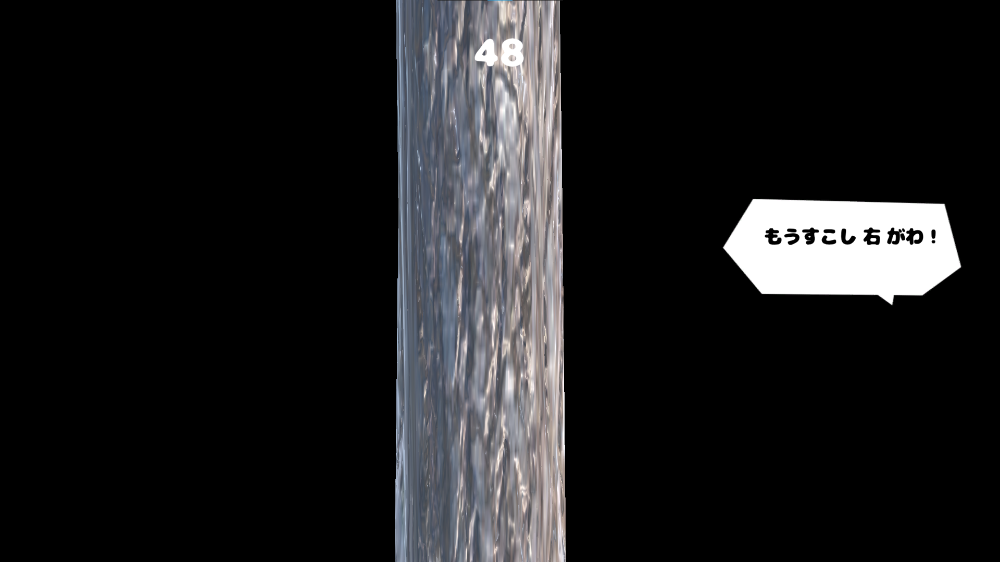

すいか割り

1. 作品概要
画面に表示されるセリフを頼りにして、すいかの位置を特定し、正確にすいかを割ることを目指す、リアル志向のすいか割りゲームです。
2. 成果
- デプロイ先
- リポジトリ（アセットなし）
- デモ動画
3. 開発背景
制作当時 7 月頃だったことから、夏というテーマでブレストを行い、テーマの中からシンプルかつ現実に忠実なすいか割りを再現するゲームを制作することにしました。
初めて完成させるゲームとして短期間で、ゲームフローを完結させるという最小限のタスクを設定して制作しました。
4. 操作方法
- WASD キー：移動
- 左クリック：棒を振り下ろす
- マウス：視点移動
画面には、すいかの位置を教えてくれるセリフが表示されます。それらを頼りに、すいかの位置を予測し、ゲージをためて勢いよくすいかを割ります。
割った位置・時間・ゲージ量に応じて、スコアが算出されます。
5. 開発期間
1 週間程度。
6. 開発環境
Unity（WebGL）
6.1. 使用ライブラリ
- InputSystem
7. ポイント
点数の算出方法
すいか割りを評価する点数計算には、かかった時間・割った位置・割るときの強さの三要素を用い、それぞれが掛け合わさることでインフレした点数が算出されるようになっています。
また、そのときの割った位置を計算する当たり判定は三段階に別れており、どの方向からプレイヤーが棒を当てても適切に計算されるよう、角度が調整されています。

目隠しを行った状態で行われるゲーム性
視界が遮られた中で、セルフが表示される位置やゲージ等の配置を直感的に受け取れるように工夫しました。

